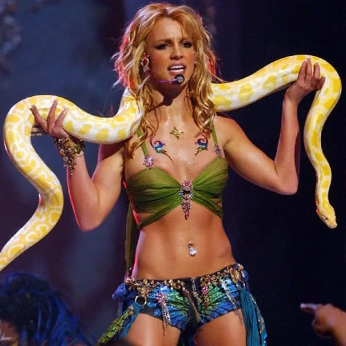

Britney Jean Spears es una cantante, bailarina, compositora, modelo, diseñadora de moda y empresaria estadounidense. Comenzó a actuar desde niña, a través de papeles en producciones teatrales. Después adquirió fama al participar en el programa de televisión The Mickey Mouse Club . En 1997, firmó con Jive Records y dos años más tarde lanzó su primer álbum , ...Baby One Time, el álbum más vendido de una solista adolescente. En el 2000 lanzó su segundo álbum, Oops!... I Did It Again, que vendió un millón de copias en su primera semana de lanzamiento en Estados Unidos. Durante su primera década en la industria, Spears se convirtió en una figura destacada de la música pop y la cultura popular.
Fecha de Nacimiento: 2 de diciembre de 1981
Canción más popular: Oops I Did It Again
Se la dejamos a continuacion por si desea escucharla dandole al boton play:
En el recorrido observamos una variedad de pequeños cuadros de diferentes videos de Britney, en los cuales aparece ella en una misma pose la cual es ella con su melena rubia en una presentacion en vivo donde cantaba una de sus canciones y se coloco una serpiente piton en los hombros haciendo parte del performance